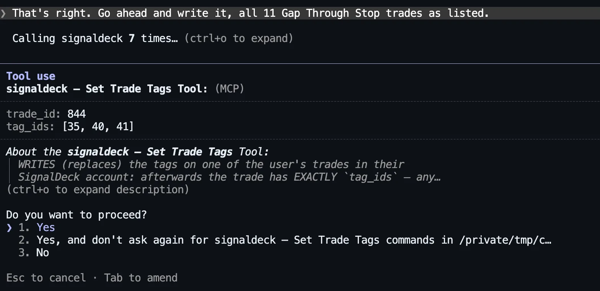
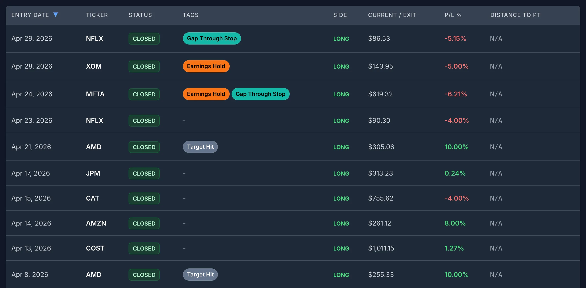

Why Old Trades Are Untagged
Nobody tags their first trade. You tag after a loss teaches you a category exists. The stock trading journal post makes the case for two tags in particular: trades held through an earnings report, and stops that filled below the price you set because the stock gapped. Both are exactly the kind of thing you only start noticing after it has happened a few times, so the trades that taught you are the ones without the tag.
Going back by hand means opening every old trade, checking dates against an earnings calendar, comparing each fill to its stop, and clicking tags on one at a time. For a year of swing trading that is an afternoon, which is why it doesn’t happen. An assistant connected to the journal can do the reading and the matching. You still decide the rule and approve the result.
The setup for this post:
- The account is a demo, and hypothetical. One swing trader, 113 closed long stock trades entered between November 3, 2025 and October 16, 2026 in 15 large-cap names, under two strategies (Breakout and Pullback), risking up to $400 per trade. Net result: −$1,614.60, or −3.71R.
- The prices are real. Every entry and exit comes from real daily bars. Which days and names were traded was a random pick; how each trade turned out is whatever the market did.
- Tagging started on June 1, 2026. From then on, trades got an entry tag (A+ Setup, Gap Up Entry or Chased Entry) by a fixed rule. The 68 trades before June have no tags at all, and nothing in the account was tagged for earnings or gaps.
- The assistant is Claude Code (Claude Opus 5.5), run on November 6, 2026. It was connected with a personal access token that can read and write but not delete. SignalDeck’s read tools were pre-allowed and its write tools were not, so Claude Code asks before running one (one exception, explained in the note at the end). Web search, file and shell tools were off, so the assistant had only the journal and its own general knowledge.
The Workflow
Three messages did the whole job: define the rule and ask for a list, approve the list, then ask the question.
1. Define the rule, supply what the journal lacks, ask for a list
The first message defined both tags precisely enough that two people would tag the same trades. “Held through earnings” is vaguer than it sounds: a stock that reports after the close is a different case from one that reports before the open. So the definition was:
“Back-fill two tags across ALL my closed trades. (1) ‘Earnings Hold’: I held through a report. AMC report on day D = I entered on or before D and exited after D. BMO report on day D = I entered before D and exited on or after D. (2) ‘Gap Through Stop’: a stop-loss exit that filled below my planned stop. Earnings dates […]: NVDA 2025-11-19 AMC, 2026-02-25 AMC, … Don’t change anything yet. Show me the trades you’d tag and why, and exactly what you’d write.”
The message then listed every report date for the 15 names, with AMC (after the close) or BMO (before the open) for each, about 70 dates in all. Those dates are not in your journal, and the next section shows what happens without them. The last sentence matters most: don’t change anything yet. A back-fill is many writes, and you want to review all of them as one list before any happen.
The assistant read all 113 trades with list_trades, opened the stop-loss exits that lost more than 1R in full with get_trade to compare each fill with its planned stop (the other stop-outs closed at exactly −1R, so they filled at the stop), and came back with this:
![Claude Code reporting 17 trades to tag and that nothing has changed yet. A table of 10 Earnings Hold trades: 844 NFLX, 827 NVDA, 818 META, 813 NFLX, 793 XOM, 792 META, 774 COST, 759 CAT, 754 JPM and 739 NVDA, each with the dates held, the report date and timing, and why it counts, such as entered the morning of an after-close report and exited the next day. Below it, close calls left out: 764 AMZN exited at 10:30 before that day's after-close report, 779 MU entered the day after its report, and two JPM trades were entered the day after a before-open report.](../../assets/screenshot-retrotag-claude-proposal.webp)
The near-misses are where a careless rule goes wrong. Trade 764 (AMZN) closed on the morning of an after-close report, so it never held through it. Trade 754 (JPM) closed on the morning of a before-open report, so it did. The assistant applied the definition to each one the same way, which is the point of writing it down.
For Gap Through Stop it found 11 trades, and flagged a judgement call we hadn’t made. Four of them (794, 835, 751, 735) filled less than $1 below the stop. That fits the rule as written, but it is ordinary slippage, not a gap, and it offered to add a minimum such as 0.5% below the stop. We kept the rule as written, so the tag means “filled worse than the stop”. Five of the 11 filled more than 1% below it.
It ended with exactly what it would write:
![Claude Code's 'What I'd write' table, the tags each trade will have after the change: 844 gets A+ Setup, Earnings Hold, Gap Through Stop; 818, 813 and 792 get Earnings Hold and Gap Through Stop; 841 gets Gap Up Entry and Gap Through Stop; 835 gets A+ Setup and Gap Through Stop; 827, 793, 774, 759, 754 and 739 get Earnings Hold; 798, 794, 764, 751 and 735 get Gap Through Stop. It says that is 2 new tags and 17 trades updated, no other trades touched, and asks whether to go ahead or drop the sub-$1 slips first.](../../assets/screenshot-retrotag-claude-what-it-would-write.webp)
The column is labelled “tags after the change” for a reason. SignalDeck’s tagging tool, set_trade_tags, replaces a trade’s tags in one step rather than adding to them. That makes each change all-or-nothing, but it also means an assistant that sent only the new tag would wipe the old ones. The tool’s own description says so, and here the assistant carried A+ Setup and Gap Up Entry through. Check that column before you approve. On a trade that already has tags, the final list should always contain them.
2. Approve, and watch the permission prompt
The second message was one line: “That’s right. Go ahead and write it, all 11 Gap Through Stop trades as listed.” The assistant created the two tags with create_tag, then started on the trades, and Claude Code stopped it to ask:

For a 17-trade batch, option 2 (“don’t ask again” for this tool) saves you 16 more prompts, and you’ve already reviewed the list. The trade-off is that it stays allowed for later sessions in that folder too, until you remove it from Claude Code’s permissions. Choose option 1 if you want to approve each trade separately. SignalDeck’s write tools tell the assistant to show the change and get your confirmation first, and most clients also prompt before a write tool runs, but the server can’t force a client to ask. The proposal step is the part you control.
All 17 writes went through. Every trade in the account was then checked against the expected tags: all 113 matched, including the three that kept their entry tags. In the app, the old trades now carry the new tags:

3. Ask the question the tags were for
See the last section. First, two things that decide whether you can trust step 1.
What the Assistant Can and Can’t Know
The two tags in this post are different in kind, and the difference decides how much work you have to do.
Gap Through Stop is fully inside your journal. Every trade records its planned stop, its exit price and its exit reason, so the assistant can apply the rule without outside help. The only judgement is the threshold, and the assistant raised that itself.
Earnings Hold is not. SignalDeck stores your trades, not each company’s reporting calendar; its economic calendar covers upcoming macro releases by currency, not company earnings. To see what happens if you don’t supply the dates, we ran the request in a fresh session with no dates: “Find every trade I held through an earnings report and tell me which ones you would tag ‘Earnings Hold’. Don’t change anything yet.”
The answer was upfront about it: “SignalDeck doesn’t have earnings dates (its calendar only covers economic releases), so the dates below are from my own knowledge, not your account.” It split its list into dates it was “pretty sure” of and dates after its training cutoff that it had estimated, and asked us to check the estimates. Against the real dates it did well. It found all 10 true earnings holds. It also made two mistakes:
- One wrong trade. It proposed a GOOGL trade held July 24 to 31, 2026, against “late July (exact day unknown)”. Alphabet reported on July 22, two days before that trade was opened.
- One wrong fact about the account. It said trade 827 “already has A+ Setup, and I’d keep that.” Trade 827 had no tags. Harmless here, but the same slip in a final tag list would put a tag on a trade that never had it.
So: supply the dates. Copy them from each company’s investor-relations page or any earnings calendar, with before-open or after-close for each. The assistant will tell you when it is guessing, but a back-fill writes its guesses into your records, and you then analyse those records. For this demo, the dates we pasted came from Yahoo Finance’s earnings history. (Our prompt text says “investor-relations page”, which is what you’d normally use.)
Read the table, not the summary sentence. In a separate headless run of the same request with dates, the answer opened with “I found 14 trades to tag: 10 for ‘Earnings Hold’ and 11 for ‘Gap Through Stop’, with 7 getting both.” The tables underneath were right: 17 trades, 4 of them with both tags. Only the opening sentence was wrong. The interactive run shown above got the counts right. The rows are what get written, so check those.
Limits: Tags, Replacing, and the Hourly Write Limit
- The tags don’t need to exist first. The assistant can create them with
create_tag; if a tag with that name already exists, it reuses it. On the Free plan you can have up to 10 tags; Pro and Elite have no tag limit. - Tagging replaces, it doesn’t add. Covered above: check the final tag list for any trade that already had tags.
- Writes are limited per hour. SignalDeck currently allows 120 writes an hour per user. Our test server ran the software’s default of 30, which is the limit you see below. Each trade whose tags change is one write, and so is each new tag. The limit is per user, in a fixed one-hour window, and shared with notes, journal entries and most other non-trade writes the assistant can make. Reading trades doesn’t count against it.
Our back-fill used 19 writes: 2 new tags and 17 trades. To see the limit, we then asked for a bulk change on purpose: “create a ‘Target Hit’ tag and add it to every trade that exited at its target”, with no review step. There are 18 such trades, so this needed 19 more writes, with 11 left in our test server’s 30-write hour.
![Claude Code reporting partial completion: 10 of the 18 target-hit trades are tagged. SignalDeck allows 30 writes per hour and this session reached the limit, so the other 8 were refused; the server says writes open again in about 58 minutes. It found the 18 by checking all 51 winning closed trades, notes 825 and 769 filled slightly above their target, and lists the trades done (830 and 828 with A+ Setup kept, 827 with Earnings Hold kept, and 831, 825, 822, 816, 790, 785, 779) and the eight still to tag: 769, 765, 760, 757, 748, 746, 745 and 737, which are unchanged.](../../assets/screenshot-retrotag-claude-write-budget.webp)
This is the behaviour you want from a limit. The refused writes changed nothing, so there was no half-tagged trade to clean up, and the assistant reported exactly which trades were done and which were left. It made 70 tool calls along the way, mostly reads of the 51 winning trades, and the reads didn’t count.
For a bigger history, do the arithmetic before you start. In our run the assistant’s three replies took under three minutes between them; the rest of the ten minutes in the title is you reading the list, and collecting the earnings dates comes on top. It also assumes the back-fill fits in one hour’s writes, as ours did with 19. If your rule matches 300 trades, that is 300 writes, spread over three hourly windows at 120 an hour. The read-and-propose step is the same either way. Only the writing spreads out: approve the full list once, then ask the assistant to continue each time the limit resets. You can also back-fill one tag at a time, starting with the one you most want answered.
Then Ask the Question
The tags exist to answer something. The third message: “How do my Earnings Hold trades compare with everything else, in R? Same for Gap Through Stop.”
![Claude Code comparing tags. Earnings Hold: 10 trades, 20% win rate, -0.86R average, -8.61R total, against everything else at 103 trades, 48%, +0.05R, +4.89R. Gap Through Stop: 11 trades, -1.46R average, -16.10R total, against 37 other stop-outs that filled at the stop at -1.00R each; a gap cost an extra 0.46R on average, about 5.1R in total. Four trades have both tags (818 META -2.97R, 813 NFLX -2.46R, 844 NFLX -1.64R, 792 META -1.24R), totalling -8.31R; the other six earnings holds come to -0.31R combined. Without those four the account would be about +4.6R instead of -3.7R. It concludes the stop doesn't protect overnight, and that the samples are small.](../../assets/screenshot-retrotag-claude-earnings-vs-rest.webp)
| Group | Trades | Win rate | Avg R | Total R |
|---|---|---|---|---|
| Earnings Hold | 10 | 20% | −0.86 | −8.62 |
| Everything else | 103 | 48% | +0.05 | +4.91 |
| Gap Through Stop | 11 | 0% | −1.46 | −16.10 |
| Both tags | 4 | 0% | −2.08 | −8.31 |
| All closed trades | 113 | 45% | −0.03 | −3.71 |
Our own figures, from the same trades. Ten trades held through a report turned a slightly profitable year into a losing one. The more useful finding is in the overlap. Four trades carry both tags, and they hold nearly all of the earnings damage: −8.31R of the −8.62R. The other six earnings holds came to about break-even. As the assistant put it, “the problem isn’t holding through earnings as such. Your stop doesn’t protect you overnight, and earnings are when the big overnight gaps happen.” A planned 1R loss on META became 2.97R.
That points at a sizing rule more than an earnings rule: size a position you will hold through a report by the gap you could take, not by the distance to your stop (see R-multiples). Ten and eleven trades are small samples, and the assistant said so. Treat it as something to test with the tag going forward, not a settled result. With the tag on every past and future trade, the same question will have a bigger answer each quarter. For more questions to ask once your history is tagged, see 20 questions to ask your trading journal, including expectancy by tag (what expectancy means).
To set up a connection, see connecting Claude or ChatGPT to your trading journal or the AI assistant page. The connection and its tagging tools are included on every plan, including Free.
The account is a hypothetical demo, not anyone’s real trading, and nothing here is a recommendation to buy or sell anything. Prices are real daily bars. Earnings dates are from Yahoo Finance’s earnings history, retrieved November 6, 2026. Answers were produced by Claude Code with Claude Opus 5.5 on November 6, 2026, against a SignalDeck demo account on the current release with the hourly write limit switched on, at the software’s default of 30 writes an hour (SignalDeck itself currently allows 120). The three steps ran in one continuous session; the no-dates run and the headless run were separate fresh sessions. The screenshots are unedited apart from cropping. No Create Tag permission prompt appears because an earlier, aborted run in the same folder had already allowed that tool. A normal first run asks for it too. ChatGPT reaches the same tools through the same connector, but it wasn’t tested for this post and its answers will differ. Every tag written was checked trade by trade against a separate calculation from the same rule and dates.
FAQ
Can an AI assistant tag my old trades for me?
Yes, if it is connected to your journal with write access. In SignalDeck the assistant reads your trades, proposes which ones match a rule you define, and after you approve it applies the tags with the set_trade_tags tool. It can create a missing tag with create_tag. Ask it to show the list and the exact tags each trade will end up with before it writes anything.
Does SignalDeck know when a company reported earnings?
No. SignalDeck’s economic calendar covers upcoming macro releases by currency, not company earnings dates. To tag earnings holds, paste the report dates and whether each came before the open or after the close. Without them, an assistant falls back on its own memory; in our test that produced one wrong tag and one wrong statement about an existing tag, though it did warn that some dates were estimates.
How many trades can an AI assistant tag per hour in SignalDeck?
Writes through the assistant connection have an hourly limit per user, shared by tag, note, journal and most other non-trade writes. SignalDeck currently allows 120 writes an hour. Each trade whose tags change is one write, and creating a tag is one more. Reads don’t count. A back-fill that touches 17 trades fits easily in one hour; one that touches 300 spans three hourly windows. Calls refused by the limit change nothing, and the assistant can resume when the hour resets.
Related Articles
20 Questions to Ask Your Trading Journal
What to ask once the assistant is connected.
Stock Trading Journal: What to Track When Stops Gap
Why earnings holds and gap losses deserve their own tag.
Connect Claude or ChatGPT to Your Journal
What the assistant can read, write, and never touch.
Trading Expectancy
The number to ask for, per tag.
Tag the history you already have
Import your trades, connect Claude or ChatGPT, and back-fill the tags you wish you had started with. You review every change before it’s written. Free during beta; Pro is $30/mo and Elite $50/mo when billing launches.